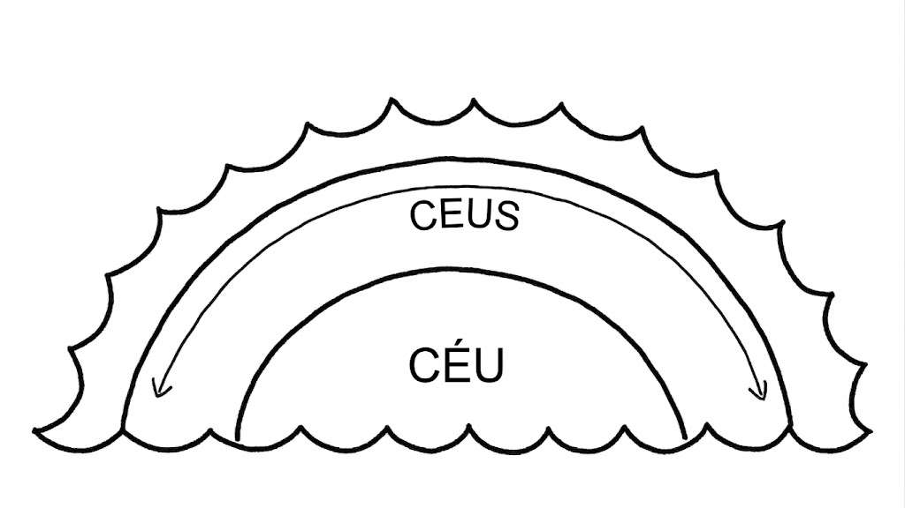
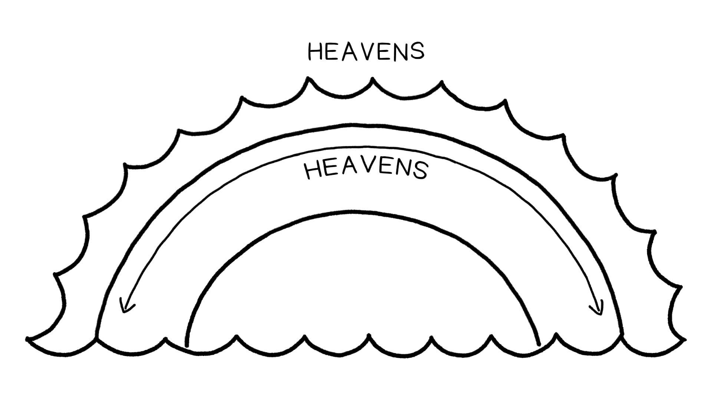

Sessão 4: Reflexões sobre Céus e Terra no Novo TestamentoSession 4: Reflections on Heaven and Earth in the New Testament
Principais LiçõesKey Takeaways
Toda a nossa linguagem sobre Deus, até mesmo a linguagem dos autores bíblicos sobre Deus, tem certas limitações. Mas essas limitações podem ser o veículo para comunicar o que Deus quer que seu povo ouça.All of our language about God, even the biblical authors’ language about God, has certain limitations. But those limitations can be the vehicle for communicating what God wants his people to hear.
A Bíblia não é ficção científica, mas é um texto antigo. Ler a Bíblia é uma experiência intercultural. E parte de respeitar e amar bem nossos “vizinhos” autores bíblicos é abrir nossos olhos para o modo deles de ver o mundo.The Bible is not science fiction, but it is an ancient text. Reading the Bible is a cross-cultural experience. And part of respecting and loving our biblical author “neighbors” well is opening our eyes to their way of seeing the world.
Reflexão sobre Nossa Própria Cosmologia Versus a Cosmologia BíblicaReflection on Our Own Cosmology Versus Biblical Cosmology
Se apenas importarmos nossa cosmologia para a Bíblia, vamos entender mal o que os autores bíblicos estão comunicando. Que pensamentos, perguntas ou observações você tem sobre isso?If we only import our cosmology into the Bible, we are going to misunderstand what the biblical authors are communicating. What thoughts, questions, or observations do you have about this?


A Separação dos Céus. Ilustração criada por Tim Mackie para BibleProject Classroom: Heaven and Earth (2019).The Separation of the Heavens. Illustration created by Tim Mackie for BibleProject Classroom: Heaven and Earth (2019).
A Bíblia como Fonte de Conhecimento A Bíblia não é ficção científica, mas é um texto antigo. Ler a Bíblia é uma experiência intercultural. E parte de respeitar e amar bem nossos “vizinhos” autores bíblicos é abrir nossos olhos para o modo deles de ver o mundo.The Bible as a Source of Knowledge The Bible is not science fiction, but it is an ancient text. Reading the Bible is a cross-cultural experience. And part of respecting and loving our biblical author “neighbors” well is opening our eyes to their way of seeing the world.
Pergunta para ReflexãoReflection Question
Que pensamentos ou perguntas você tem até agora? Escreva-os e revise-os no final desta aula para ver se você ganhou mais clareza.What thoughts or questions do you have so far? Write them down and revisit them at the end of this class to see if you have gained further clarity.